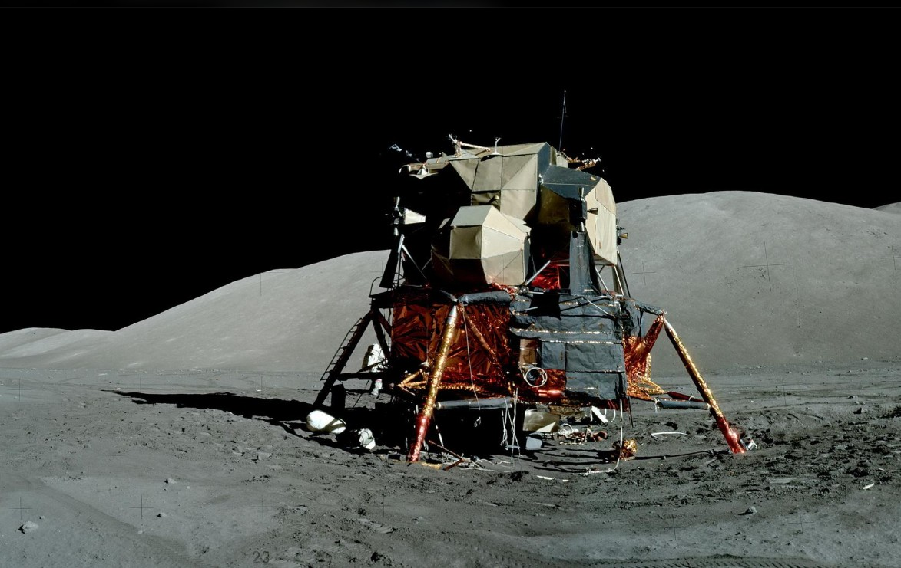
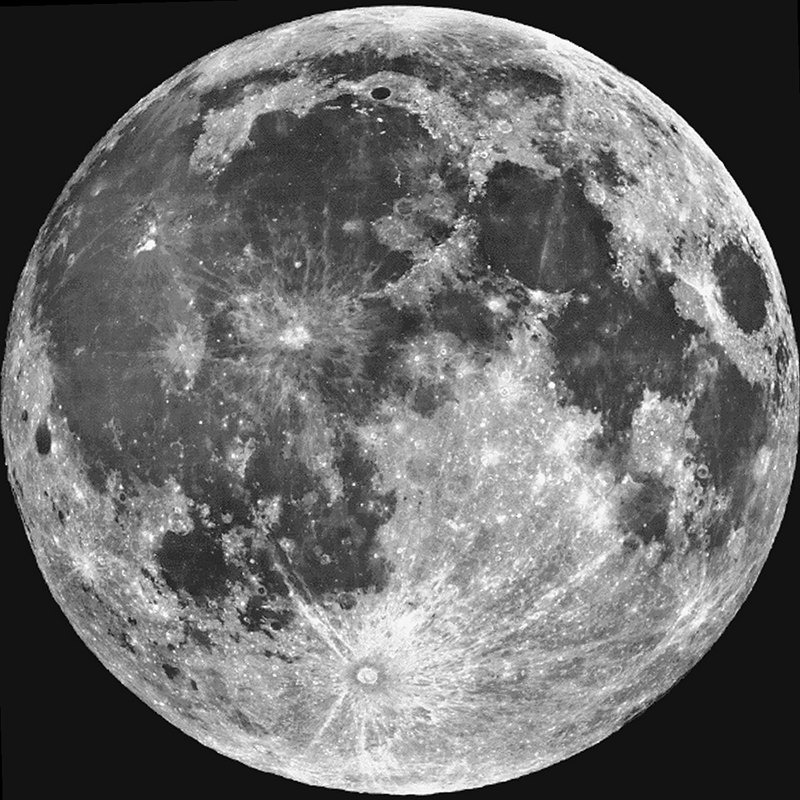
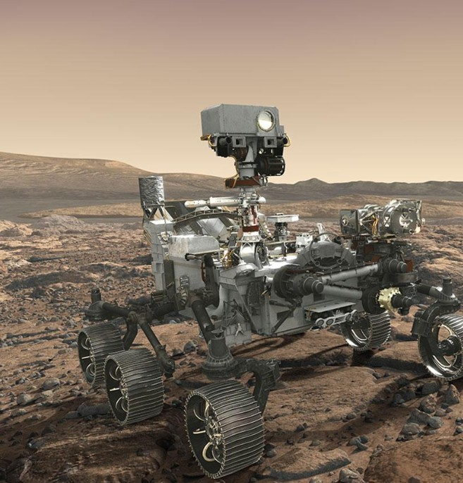
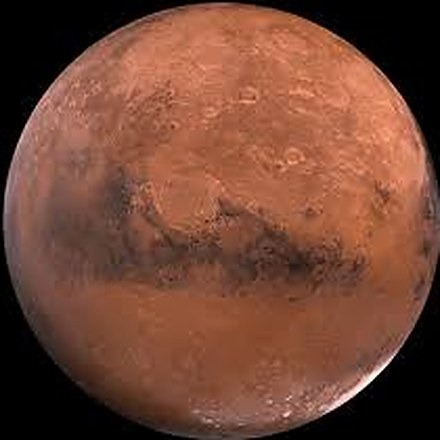
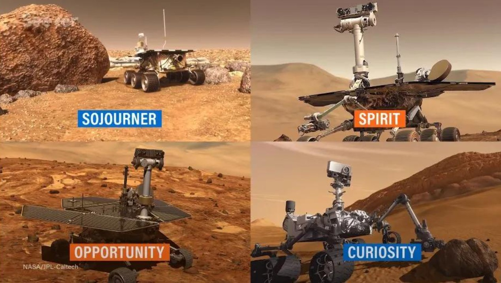

Team Echoes of Apollo · NASA Space Apps Challenge
Abandoned,not forgotten.
Ten NASA machines still sit on the Moon and Mars. Every one did its job and then went quiet. This is where they are and what they left us.
Two worlds, ten stories
Between 1967 and 2024 NASA left machines behind on the Moon and on Mars. These photographs show the kinds of hardware that stayed.


The Moon. Four sites on the register. An Apollo lunar module sits on the surface, the same design as Eagle, Intrepid and Falcon (shown: Apollo 17). Its lower stage never left. Credit: NASA

Mars. Six sites on the register. Artist’s concept of a NASA Mars rover. This type of rover is still working, so it is not on the register. Credit: NASA/JPL-Caltech
The register
Four sites on the Moon, six on Mars. All of them were switched off, ran out of power, lost contact or reached the end of their last flight. Each file opens with what the machine would say if it could.
Where they are
Select a marker or a name to read about the machine. The Moon map sits on a photograph of the near side; the Mars map is a flat chart of the whole planet.
180 m. Apollo 12’s Intrepid landed this close to Surveyor 3, which had sat there since April 1967. The crew walked over and cut off about 10 kg of it to bring home.
17 m. Apollo 11’s seismometer station was set this far south of Eagle. Its laser reflector sits about 5 m beyond that.
60 km. Apollo 12’s spent ascent stage hit the Moon about this far from its own seismometer and produced the first recorded artificial moonquake.
Short lives, long silences
Solid bars show how long each machine worked after landing. The dashed line runs from its last contact to today. Most have now been silent for far longer than they worked.
Mission records
Dates and figures from NASA’s mission pages and the NSSDCA catalogue. Select a column heading to sort. The “silent for” column counts from today.
Did it stick?
Six questions drawn straight from the files above.
About this project
Built by Team Echoes of Apollo for the NASA International Space Apps Challenge.
The challenge
“Abandoned but Not Forgotten: Storytelling about NASA’s Discarded Equipment on the Moon and Mars.” We chose to follow each machine from landing to silence, using only what the mission records say.
What is included
- Apollo 11, 12 and 15 lunar modules and their surface experiments
- Surveyor 3
- Viking 1 lander, Mars Pathfinder and Sojourner
- Spirit, Opportunity, InSight, Ingenuity
Active rovers, orbiters, asteroid missions and deep-space probes are left out on purpose.
Sources
- NASA Space Science Data Coordinated Archive (NSSDCA): Apollo 11, 12 and 15 Lunar Module / surface experiment pages
- NASA Science mission pages: Surveyor 3, Viking 1, Mars Pathfinder, Mars Exploration Rovers, InSight, Ingenuity
- Siddiqi, A. A., Beyond Earth, NASA History Program Office, 2018